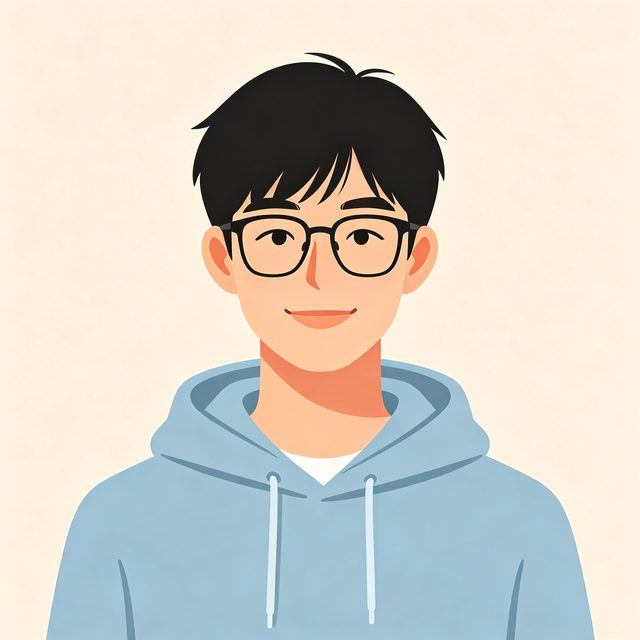

团队职业方向总览
四名成员覆盖后端、前端、数据与算法四大方向，技能互补、协作成团。

王明远
后端开发工程师李思琪
前端开发工程师
张浩然
数据分析师陈雨桐
AI 算法工程师技能发展对比表
以下为四人大学四年关键技能目标对照（2023 级，至 2027 届毕业）。
| 成员 | 目标岗位 | 核心技能栈 | 目标证书 / 成果 | 关键时间点 |
|---|---|---|---|---|
| 王明远 2023010101 |
后端开发 → 云原生架构 | Java、Spring Boot、MySQL、Redis、Kafka、Docker、Kubernetes | 软件设计师（软考）证书、实习项目上线 | 大二暑假完成首个部署项目，大三暑期实习 |
| 李思琪 2023010102 |
前端开发 → 全栈 / 体验设计 | HTML、CSS、JavaScript、TypeScript、Vue3、React、Node.js | 个人作品集网站、前端开源贡献 | 大二参加前端训练营，大三企业实习 |
| 张浩然 2023010103 |
数据分析 → 数据科学 / BI | Python、SQL、NumPy、Pandas、Scikit-learn、Tableau、Spark | 数据分析竞赛获奖、Kaggle 项目 | 大二参加数据竞赛，大三暑期实习 |
| 陈雨桐 2023010104 |
AI 算法 → 大模型 / 多模态 | Python、PyTorch、机器学习、深度学习、Transformer、LoRA 微调 | 科研论文 / 开源模型贡献、竞赛获奖 | 大三加入课题组，争取保研或算法实习 |
团队共同发展路线
除个人技能外，团队约定以下共同行动，确保四年不掉队。
大一 · 筑基
统一技术基础
全员完成"编程基础 + 数据结构"双修，每周一次组内算法刷题打卡，建立 Git 协作习惯。
大二 · 成型
联合项目实战
四人合作开发"合肥城市探索"校园 Web 项目（即本网站），后端、前端、数据、算法四端打通，共同上线。
大三 · 深潜
实习与竞赛
各自进入企业实习或实验室，同时组队参加省级以上学科竞赛，积累项目与荣誉履历。
大四 · 出击
求职与深造
完成毕业设计，共享秋招/保研信息，互相模拟面试，全员达成理想去向。
相关页面
返回团队主页，或查看各成员个人主页与详细职业规划。